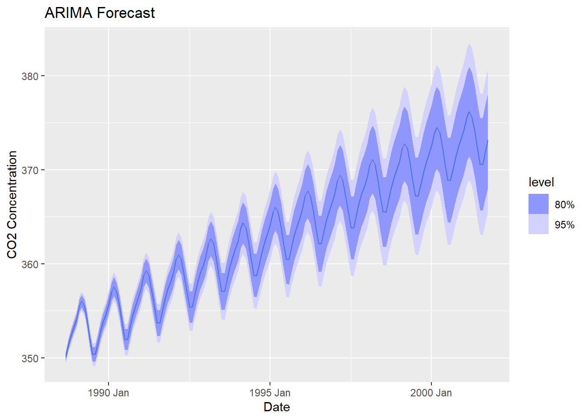
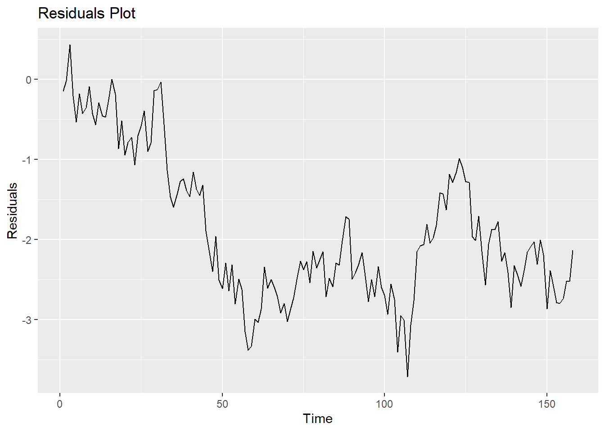
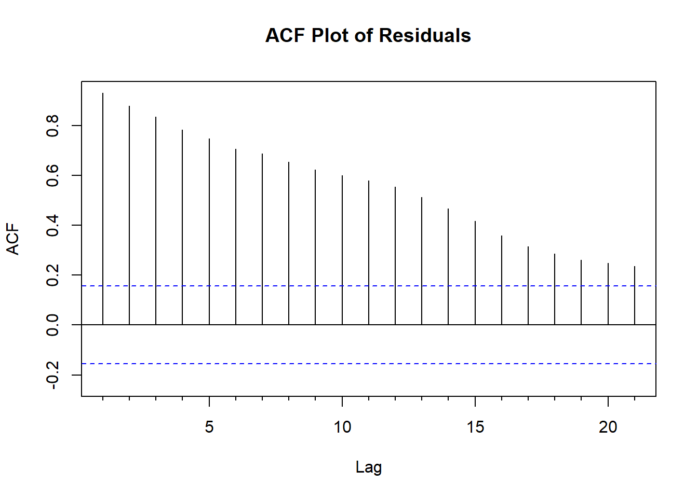
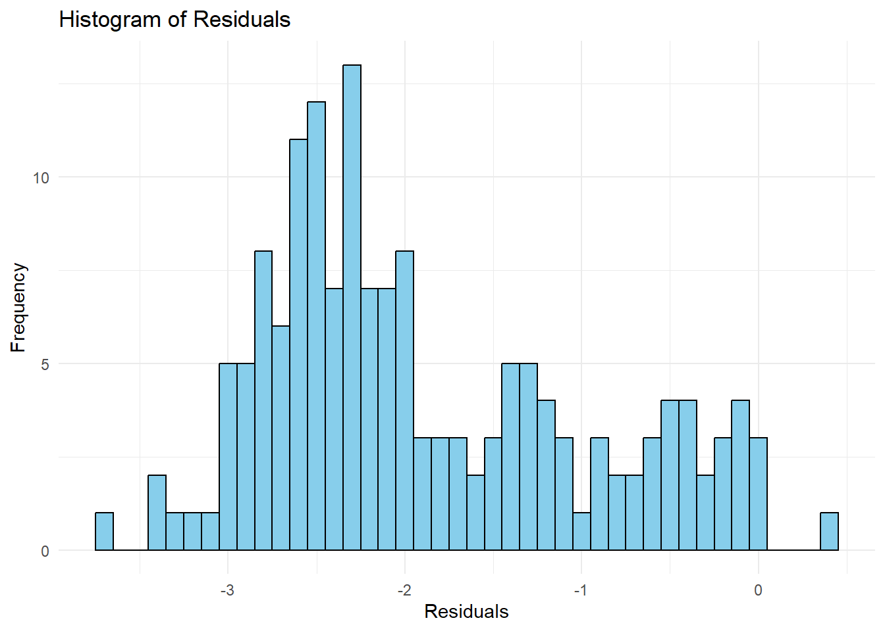
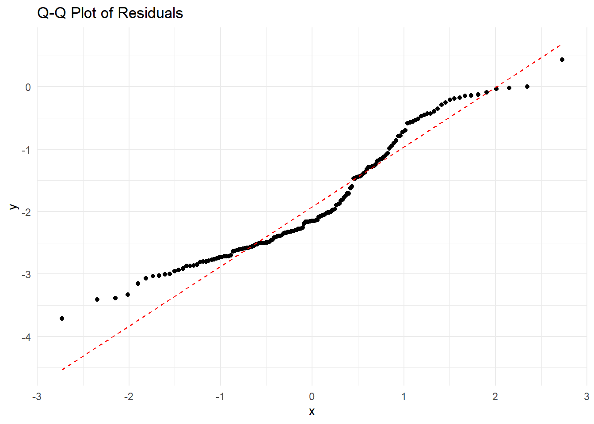

Warning: package 'forecast' was built under R version 4.3.3
Registered S3 method overwritten by 'quantmod':
method from
as.zoo.data.frame zoo
library(ggplot2)# Load the time series data from a CSV filetime_series_CO2 <-read_csv("hawai.csv")
Rows: 526 Columns: 2
── Column specification ────────────────────────────────────────────────────────
Delimiter: ","
dbl (2): time, CO2
ℹ Use `spec()` to retrieve the full column specification for this data.
ℹ Specify the column types or set `show_col_types = FALSE` to quiet this message.
# Check the structure of the datastr(time_series_CO2)
spc_tbl_ [526 × 2] (S3: spec_tbl_df/tbl_df/tbl/data.frame)
$ time: num [1:526] 1958 1958 1958 1958 1958 ...
$ CO2 : num [1:526] 316 317 317 317 316 ...
- attr(*, "spec")=
.. cols(
.. time = col_double(),
.. CO2 = col_double()
.. )
- attr(*, "problems")=<externalptr>
Step 2: Data Preparation.
This code block prepares the time series data for analysis.
First, I convert the “time” column to a proper date format (YYYY.MM) using as.Date.
Then, I create a time series object named my_time_series using the ts function. This function takes the CO2 concentration values, starting year (1958), starting month (January - denoted by 1), and frequency (monthly - specified as 12) as arguments.
# Convert the "time" column to a Date format (YYYY.MM)time_series_CO2$time <-as.Date(paste0(time_series_CO2$time, "-01"), format ="%Y.%m-%d")# Create a time series objectmy_time_series <-ts(time_series_CO2$CO2, start =c(1958, 1), frequency =12)
Step 3: Train-Test Split.
This code block splits the data into training and testing sets for model development and evaluation.
I calculate the split point (70% for training data) using the total data length.
The head function extracts the first 70% of data points as the training set (train).
Conversely, the tail function extracts the remaining 30% as the testing set (test).
Finally, I verify that the splitting process is correct using the identical function.
# Determine the split point for dividing data into training and testing setssplit_point <-round(0.7*length(my_time_series))# Split the time series into training and testing setstrain <-head(my_time_series, split_point)test <-tail(my_time_series, length(my_time_series) - split_point)# Test that the splits are correctidentical(train, head(my_time_series, split_point))
This code block builds and applies an ARIMA model for CO2 concentration forecasting.
First, I convert both training and testing data to a tsibble format using as_tsibble. This format is suitable for time series analysis with the fpp3 package.
The model function with the ARIMA argument fits an ARIMA model to the training data.
I use the fitted model to generate forecasts for the testing set using the forecast function. The number of forecasts (h) is set to the length of the testing data.
Finally, the autoplot function visualizes the actual CO2 concentration values against the forecasted values. The plot title and axis labels are specified using labs.
# Convert data to tsibble formattrain <-as_tsibble(train)test <-as_tsibble(test)# Fit an ARIMA model to the training dataarima_model <- train %>%model(ARIMA =ARIMA(value))# Forecast using the ARIMA modelforecast_values <- arima_model %>%forecast(h =nrow(test))# Plot actual vs. forecasted valuesautoplot(forecast_values) +labs(title ="ARIMA Forecast", x ="Date", y ="CO2 Concentration")

Interpretation:
This graph shows a forecasted trend based on an ARIMA (Autoregressive Integrated Moving Average) model. ARIMA is a statistical method for analyzing and forecasting time series data. The label on the y-axis represents the CO2 concentration in ppm,while X-axis represent the date in years.The graph shows the increasing trend of CO2 concentration with date. The solid blue line represent the actual concentration.The area within a blue region is 80% confidence interval and area under purple region is within 95% confidence interval.
Step 5: Residual analysis.alysis.
This code block calculates the residuals using test$value - forecast_values$.mean.
Then, we create a data frame residual_df to facilitate residual visualization.
A line plot of residuals over time is created using ggplot to observe patterns or trends in the residuals.
The Acf function generates an autocorrelation function (ACF) plot to assess any potential autocorrelation in the residuals.
A Ljung-Box test is performed using Box.test to formally evaluate the randomness of residuals. Non-randomness in residuals can indicate model inadequacy.
Calculating and Visualizing Residuals.
# Calculate residualsresiduals <- test$value - forecast_values$.mean# Create a data frame to visualize residualsresidual_df <-data.frame(Time =time(residuals), Residuals = residuals)# Plot residuals over timeggplot(residual_df, aes(x = Time, y = Residuals)) +geom_line() +labs(title ="Residuals Plot", x ="Time", y ="Residuals")

# Plot autocorrelation function (ACF) of residualsAcf(residuals, main ="ACF Plot of Residuals")

# Perform Ljung-Box test for residualsBox.test(residuals, lag =20, type ="Ljung-Box")
Residuals are the differences between the actual CO2 concentration values and the corresponding forecasted values from the ARIMA model.The positive value on the y axis signify the actual concentration was higher than the forecast,while negative values indicate the opposite.To get confirmation the Box-Ljung was performed, where data= residuals,X-squared= 1237.3,degree of freedom (df) =20 and p-value <2.2e -16. A low p- value(less than significance level,typically 0.05) in Box-Ljung test indicates that we can reject the null hypothesis and conclude that the residual are not random. This implies the presence of autocorrelation in residual.
Residual Distribution.
To visualize the distribution of residuals, we create a histogram plot using geom_histogram.
A quantile-quantile (Q-Q) plot is generated using stat_qq to compare the distribution of residuals with a normal distribution.
Finally, I perform a Shapiro-Wilk test for normality using shapiro.test to statistically assess whether the residuals are normally distributed. This assumption is often important for model accuracy and confidence interval validity.
# Histogram of residualshistogram_plot <-ggplot(data.frame(Residuals = residuals), aes(x = Residuals)) +geom_histogram(binwidth =0.1, fill ="skyblue", color ="black") +labs(title ="Histogram of Residuals", x ="Residuals", y ="Frequency") +theme_minimal()# Q-Q plot of residualsqq_plot <-ggplot(data.frame(Residuals = residuals), aes(sample = Residuals)) +stat_qq() +stat_qq_line(color ="red", linetype ="dashed") +labs(title ="Q-Q Plot of Residuals") +theme_minimal()# Display plotshistogram_plot

qq_plot

# Perform Shapiro-Wilk test for normalityshapiro_test <- residuals %>% stats::shapiro.test()shapiro_test
Shapiro-Wilk normality test
data: .
W = 0.93719, p-value = 1.893e-06
Interpretation:
A histogram is a graphical representation of the distribution of the data. In this case of ARIMA residuals,histogram of the residual is not bell shaped and this is more right skewed. similarly Shapiro wilk test provide the more accurate information on distribution of the data.In this case p-value=1.893 e-06 is extremely small so we can tentatively conclude that the residuals are not normally distributed. The W statistics of 0.93719 also suggest the deviation from normality.
Conclusions:
The extremely low p-value from the Ljung-Box test suggests that the ARIMA model fitted may not be reliable, as it indicates significant autocorrelation in the residuals. This implies that the model hasn’t adequately captured all the information in the data.
To improve this model:
Choice of parameters for the ARIMA model experiment with different combinations of autoregressive (AR), differencing (I), and moving average (MA) terms to find a better-fitting model. This may involve trying different values for the order parameters (p, d, q) in the ARIMA model might be useful.
Identification and handling outliers or anomalies in the data appropriately. Outliers can significantly affect the model’s performance and may need to be treated or adjusted for before fitting the model.
Validation of the model using alternative methods or datasets to ensure its robustness and generalizability. Cross-validation techniques or out-of-sample testing can help assess the model’s performance on unseen data.